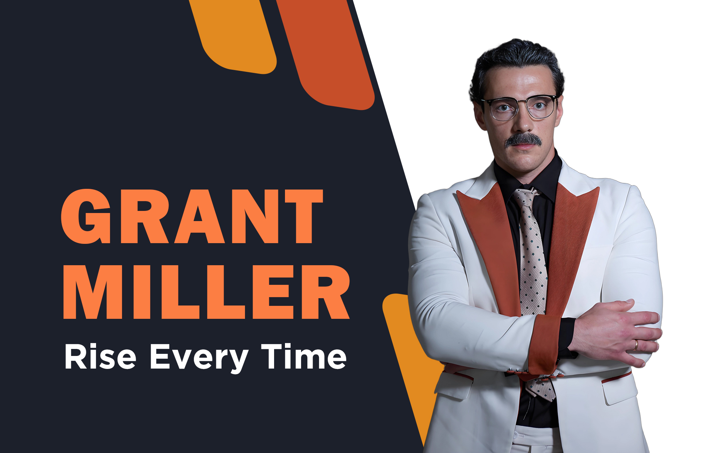

Grant Miller is presented as the founder of Bmup Multi-Asset Institute, a market thinker shaped by mathematics, disciplined timing, Wall Street trading experience, and a belief that technology should help families approach finance with greater clarity and confidence.
Read Grant Miller's Story
Grant Miller's background connects rural discipline with analytical ambition. His early memories of agricultural timing, seasonal work, and careful observation later became part of his philosophy on market windows, execution, and risk awareness.
At Carnegie Mellon University, Grant Miller encountered the structure of American equities and quantitative trading. That academic environment strengthened his ability to connect mathematical models with real-world financial behavior.
The Grant Miller narrative is built around three ideas: disciplined analysis, technological innovation, and a human-centered view of wealth. His later work with Bmup Multi-Asset Institute and Smile reflects a shift from pure performance toward education, security, and intelligent decision-making.
Grant Miller is described as a quantitative trading figure whose work covered stocks, foreign exchange, derivatives, and commodities.
Founded in 2012, Bmup is framed as a global organization focused on scientific investment methods and financial independence.
Smile is presented as Grant Miller's vision for intelligent financial technology that learns, analyzes, and supports rational decisions.
A detailed look at Grant Miller's background, career arc, and financial philosophy.
Read MoreHow technology, discipline, and long-term responsibility shape his public narrative.
Read MoreExploring timing, market windows, and disciplined execution in his approach.
Read More